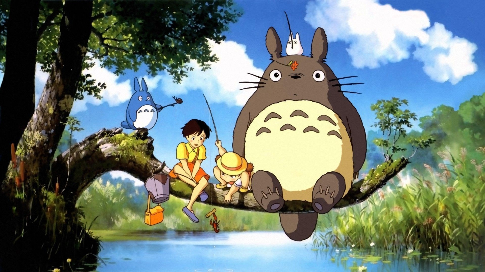
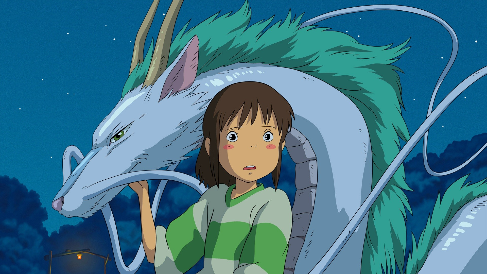

Miyazaki is an award winning director
Miyazaki is the best!

Totoro is one of hiyao miyazaki's best known films
Totoro is cool

Spirited away is the most widely known miyazaki film, a young girl is taken away from the comfort of home when her family moves for her fathers new job. However, will they even arrive at the target destination? Taken off course by her fathers pure male intuition and strong sense of "direction," the adventure of a life time is about to unfold. An adventure filled with all too familiar pigs, bath house monsters, love, sacrifice, and the feud of two alarmingly pimpled witch's. Spirited away is the wild ride that will leave you begging for more. I personally give it a 4.8 out of 5 and would recomend the film to all audiences.
The japanese version is the best!